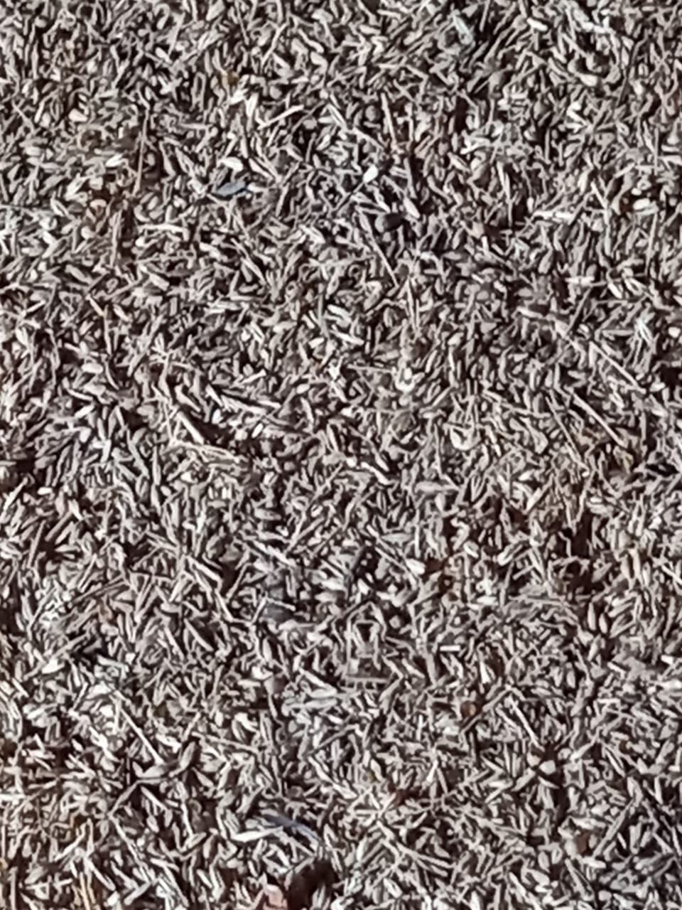
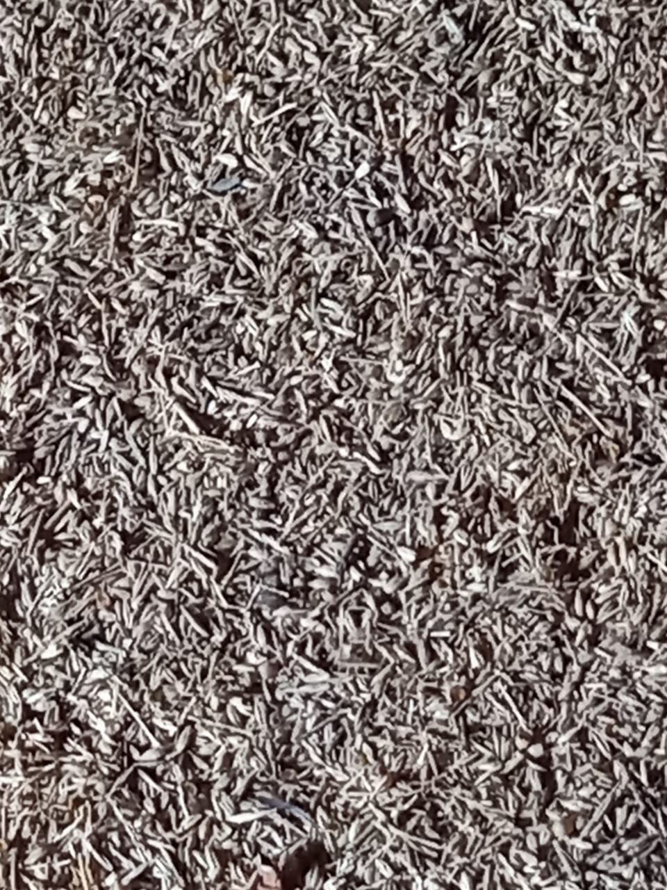
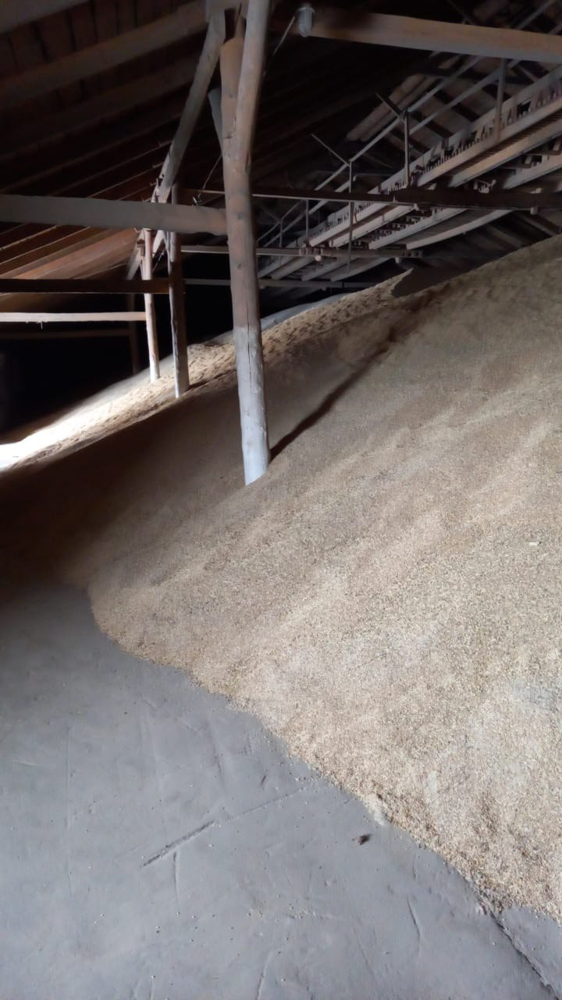
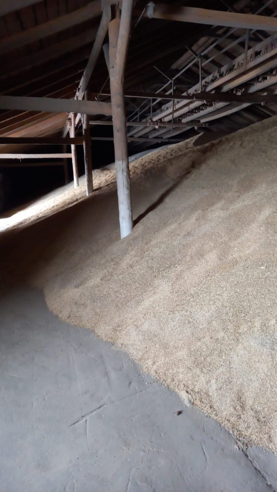

Caravan G Holding group was created by top management of Kazagro holding
Caravan G SFK is the group of companies which are active participants of the international grain trading. The company’s core activity is exporting grain, oil and legume crops grown by the industry’s large enterprises. For 20 years the global food security is our main goal. The key of the successful international trade is logistics and we are proud that we have the best specialists in this sphere. Let's bring the world together.
Our main directions: Iran, Central Asia, the Caucasus and the Persian gulf countries.
We are selling the following commodities:
Feed Barley, origin:Kazakhstan, crop 2023.
- Test Weight: min. 68.0 kg/hl; ISO 7971-3;1995
- Total Aflatoxin max. 20 pbb;
- Protein on Dry Basis: min. 12%
- Moisture:max.14.0%; ISO 712:2009
- TVN max. 50 mg/100g .
- Heated Seeds:max. 1.0%;
- Insect Damaged: max. 3.0%;
- Molded Seeds: max. 0.2%;
- Other Seeds: max. 7.0%;
- E. Coli: less 10 / gr ;
- Salmonella: Negative in 25 gr;
- Arsenic: max. 2 ppm (mg/kg);
- Cadmium:max. 1 ppm (mg/kg);
- Mercury max. 0.1 ppm (mg/kg);
- GMO:Not Allowed
Quality:
ST RK 2119-2011
Feed barley: CIF Bandar Amirabad – 165 USD for 1 MT; CIF Bandar Abbas – 173 USD for 1 MT; CIF Istanbul – 176 USD for 1 MT, CIF Augusta – 178 USD for 1 MT.
Milling wheat 3rd class (soft varieties), origin: Kazakhstan, crop 2023.
- Test weight: kg/hl ISO 7971 3:2009 - 78,20;
- protein: % ISO 20483:2013 - 13,20;
- Moisture: % ISO712:2009 - 11,50;
- Foreign matter: % ES 742/2010 - 0,25;
- Other Grain: % ES 742/2010 - 0,50;
- Falling number :sec ISO 3093:2009 - 325;
- Bug damaged kernel:% ES 742/2010 - 0,25;
- Insect damaged kernel:% ES 742/2010 - 0,10;
- Wet gluten:% ISO 21413-2 - 33,00;
- Sedimentation: ml ISO 5529:2007 - 64/74;
- AlveographW 10-4JISO 27971: 2008 - 383;
- Damaged or broken: max. 3 %;
- Live insects: not allowed;
- Radioactivity (Cs 134, Cs 137, Ru 103): max. 10 bq./kg
Quality:
ST RK 1046-2008
Milling wheat 3rd class: CIF Bandar Amirabad – 175 USD for 1 MT; CIF Bandar Abbas – 190 USD for 1 MT; CIF Istanbul – 190 USD for 1 MT, CIF Augusta – 192 USD for 1 MT.
Feed corn, origin: Republic of Kazakhstan, crop 2023.
- Moisture, %: < 14,00
- Foreign matter, %: 1,00
- Sunflower seeds: < 0,5%
- Contamination: Not detected
Quality:
GOST 53903-2010
Feed corn: CIF Bandar Amirabad – 168 USD for 1 MT; CIF Bandar Abbas – 176 USD for 1 MT; CIF Istanbul – 180 USD for 1 MT, CIF Augusta – 180 USD for 1 MT.


 


 
